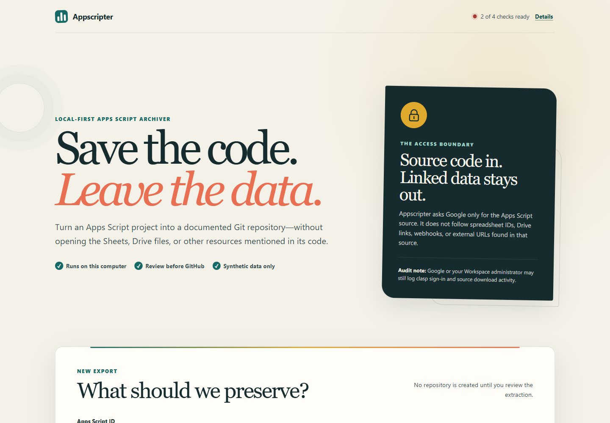

Technical VA · Systems builder
Kyle Josef M.
Bonachita
I make the tools behind busy operations easier to use and trust.
I bring technical support, Google Apps Script, Power Automate, and production data experience to process-heavy work. Here are systems I built and workflows I can help improve.
- Automation
- Web development
- Data operations
Technical Support (Web Developer & Workflow Automation Specialist)HCLTech Philippines · NVIDIA Corporation
Selected work
What can I help you build?
Scroll through the projects, or choose one area that matches your team’s needs.
01 / 03
Workflow automation
Automation
Routine work should reach the right person at the right time. These workflows also leave a clear path for review when something needs attention.
02 / 03
Web development & technical support
Web development
I build interfaces and supporting tools that make the next action clear. This selection includes Apps Script web apps, a desktop utility, and a connected attendance system.
03 / 03
Data cleanup & records support
Data operations
I organize inventory lists, sales exports, and booking records so teams can use them. That means standardizing fields, filtering rows that need attention, reviewing duplicates before exclusion, reconciling totals, and handing over clear files for the next step.
About / how I work
Support the work.
Improve the system.
I help teams resolve the issue in front of them and make the next run easier.
At HCLTech Philippines, I work in technical support, web development, and workflow automation for our client, NVIDIA Corporation. I support production, QA, MIS, and management teams with technical issues, internal tools, repetitive processes, and production and inventory records.
Earlier AI data annotation, collection, and quality-check work taught me to look closely at source data. I bring that attention to each project: understand the whole process, explain the plan in plain language, test edge cases, and leave useful operating notes. When something breaks, I trace the cause and tell the team what needs attention.
Technical Support (Web Developer & Workflow Automation Specialist)
HCLTech Philippines · NVIDIA Corporation
EducationBS Computer Science
Based inTaguig City, Metro Manila
01 / Automate
Less repetitive follow-up.
Map manual handoffs, build multi-step flows with checks and alerts, review failed runs, and document who handles exceptions.
02 / Build & supportTools people can actually use.
Build clear internal apps and forms, troubleshoot technical issues, test responsive layouts, and document fixes for the next user.
03 / Keep records clearData ready for a handoff.
Validate incoming files, clean production or inventory records, separate review items, reconcile totals, and hand over a traceable output.
Hands-on in this portfolio
Google Apps Script · Google Sheets · Power Automate · Microsoft Teams · HTML/CSS/JavaScript · Python · APIs
Other tools
I use ChatGPT and Claude as assistants. I can onboard to Zapier, Make (formerly Integromat), n8n, Airtable, Notion, Slack, WordPress/Webflow, and CRM tools as a project requires.
How I work
Map the process · Test edge cases · Check failed runs · Explain changes clearly · Document the handoff
Get in touch
Tell me where the work gets stuck.
Have a manual workflow, internal web tool, or data process that needs attention? I’d be glad to hear about it.
Email me
Connect with me through the links below.